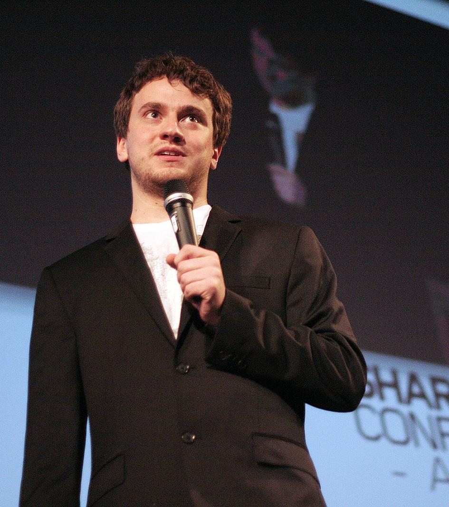

Comment l'IA révolutionne-t-elle la conduite autonome?
Avez-vous vu les voitures avec des caméras sur le toit?
Depuis l’année 2010, l’idée de ne plus conduire a fait rage. On cherche à remplacer les conducteurs humains, qui sont à la fois imparfaits et susceptibles à des stresses externes, par des Intelligences Artificielles connues pour leurs performances consistantes. Le but de cette aventure est d’enseigner la conduite de sorte à l’effectuer de manière algorithmique.
Le but de cette aventure est d’enseigner la conduite de sorte à l’effectuer de manière algorithmique.
Afin d’y parvenir, la voiture doit être munies de plusieurs capteurs :
- d’abords pour sensibiliser l’IA aux conditions de la conduite (pluie, neige, vent, température)
- puis de caméras, des capteurs LiDAR et des capteurs infrarouges pour analyser les objets autour de la voiture.
En fait, il n’est pas difficile de faire reconnaître l’environnement à un ordinateur; le vrai travail se fait lorsque l’IA doit tenir compte de plusieurs facteurs et contrôler les actions de la voiture, tout en se basant sur une gamme de données, qui elle-même doit être optimisée. En effet, les calculs exécuté par milliards
GOERGE HOTZ
George Hotz & Comma.ai
Depuis ses jours à Facebook, George Hotz s'est concetré sur la conduite autonome. Son but n'est pas de créer une voiture autonome, mais plutôt de développer la pièce manquante qui permettrait à une voiture de s'autoconduire.